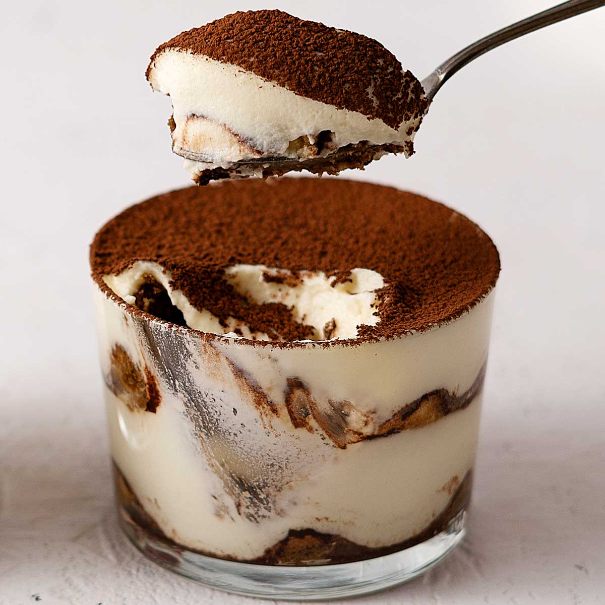

10-Minute Tiramisu for two (Eggless)

Extremely easy and perfect for any event!
Tiramisu is really a timeless (or it is season-less?) dessert, don't you think? On that note and with the holidays coming, everything about us having to adapt, appreciate and celebrate with smaller clans, here is a recipe that I really think would be useful. A tiramisu for two, it's eggless and the small batch helps us avoid food waste.
Ingredients
- Ladyfingers
- Vanilla extract
- Instant coffee
- Sugar
- Cocoa powder
- Mascarpone
- Whipping cream
Steps
- Add mascarpone cheese and sugar into a bowl. Whisk until fluffy using a handheld whisk. Now add in vanilla extract and whipping cream. Continue whisking until you get a thick stiff cream. Don't over mix to avoid splitting. Set aside.
- Mix water, coffee and sugar in a wide flat container until sugar is dissolved. Set aside.
- Soak ladyfingers in the coffee for a few seconds and arrange at the bottom of 2 glasses of 1 cup (250 ml). Dust with cocoa powder. Spoon and divide half of mascarpone mixture into the glasses. Repeat with more ladyfingers and the rest of the cream.
- Serve directly. Optional - chill in the fridge for 1- 2 hours for a firmer texture. Dust the top with cocoa powder right before serving.